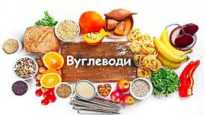
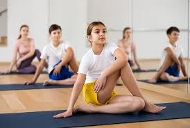

Сторінка ще на перекладі, перепрошуємо за незручності, очікуйте оновлення найближчим часом ;)
Статті
Складові харчування
Лактоза
1 - Стаття від Євгена Клопотенка про непереносимість лактози та
безлактозні протукти
2 - Коротко та зрозуміло. Головне про лактозу
Казеїн

1 - Казеїн - що це таке, де зустрічається, непереносимість та
лікування
2 - Казеїн: що це таке, шкода та користь
Глютен
1 - В яких продуктах міститься глютен і в чому його шкода для організму
2 - Глютен: міфи та реальність
Веганство та веган-продукти

1 - Веганський раціон: смачне розмаїття продуктів
2 - Веганство: принципи та користь для здоров'я
Цукорозамінники та цукор

1 - Скажи цукру «ні»: список смачних продуктів без цукру
2 - Натуральні цукрозамінники: чому вони корисні для здоров’я та як правильно їх використовувати
Жири

1 - Вибираємо корисне джерело жирів
2 - Корисні жири: які продукти їсти та норми споживання
Вуглеводи
1 - Вуглеводи корисні чи ні? Норми в дієті, користь і шкода для здоров’я
2 - Що таке вуглеводи і навіщо вони потрібні
Білок

1 - Білок: функції, норми споживання. Білок у продуктах харчування
2 - Білки: норма, властивості, функції. Користь та шкода білкових добавок
Калорії

1 - Посібник з підрахунку калорій для досягнення ваших цілей
2 - Все, що треба знати про калорії: від схуднення до утримання ваги
Клітковина

1 - Чому варто їсти клітковину і де її знайти
2 - Що таке клітковина і як збільшити її кількість у своєму раціоні
Вітаміни
Вітамін А
1 - Вітамін А: міфи та факти
2 - Вітамін А — користь для організму, але знайте міру
Вітамін D

1 - Продукти з великим вмістом вітаміну D
2 - Чи варто приймати вітамін D для профілактики
Вітамін Е

1 - Вітамін Е: корисний чи шкідливий?
2 - Міфи та правда про вітамін Е
Вітамін K

1 - Вітамін К: де він міститься та чому необхідний для нашого організму
2 - Вітамін K
Вітамін B

1 - Вітаміни групи В - властивості, роль, дефіцит та джерела
2 - Вітаміни групи B: як їх правильно споживати. Пояснює Супрун
Дефіцит вітамінів

1 - Організму не вистачає вітамінів? Розповідаємо про симптоми їх дефіциту
2 - Нестача вітамінів: причини, симптоми, як запобігти та лікувати дефіцит
Спорт
Пілатес

1 - Пілатес: протипоказання, користь і особливості тренувань
2 - Пілатес вдома або в залі: що краще для початківців?
Біг
1 - Чому бігати корисно і це не вб'є ваші коліна
2 - Користь і шкода бігу
Йога
1 - Йога: кому підійде цей вид тренувань
2 - Доведено науково: 10 переваг йоги для здоров'я та самопочуття
Силові тренування

1 - Чому силові тренування — це найкраще, що ви можете зробити для свого здоров'я і тіла
2 - Силові тренування: користь для тіла, здоров'я та молодості
Бокс
1 - Жіночий бокс
2 - 5 причин, чому ви повинні почати займатися боксом
Велоспорт
1 - Користь велосипеда для жінок, чоловіків та під час схуднення
2 - Користь від їзди на велосипеді